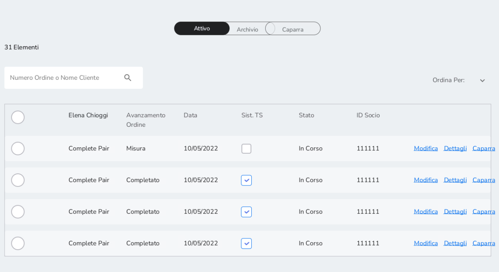
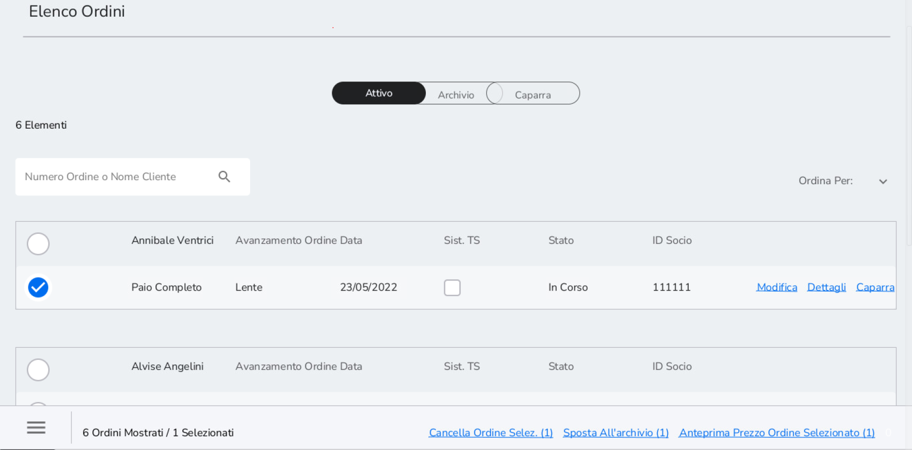
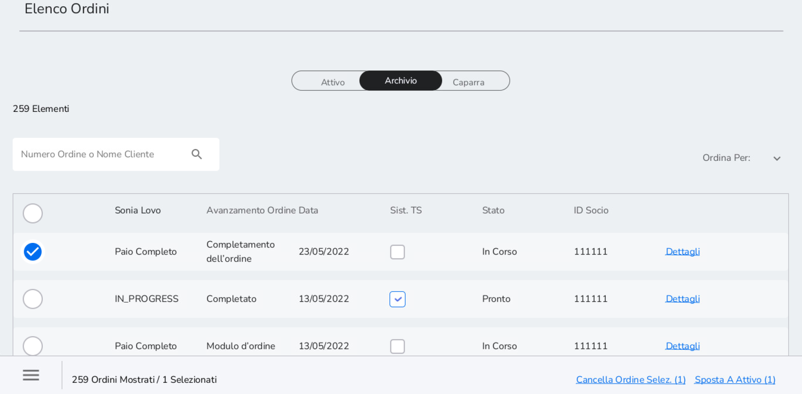
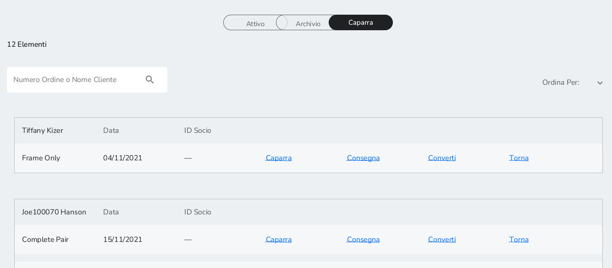

Elenco Ordini: Attivo, Archivio e Caparra
16.1 Attivo
Nella lista degli ordini attivi sono presenti gli ordini che sono stati Salvati o Sospesi durante il flusso di creazione dell'ordine. Gli ordini rimangono nell'elenco degli ordini attivi per tre giorni per poi passare in Archivio.
A destra della schermata sono presenti i seguenti pulsanti:
-
Modifica: è possibile modificare l'ordine partendo dalla sezione di flusso d'ordine in cui era stato sospeso o salvato
-
Dettagli: è possibile visualizzare tutti i dettagli dell'ordine come ID Ordine, prescrizione e informazioni sugli item selezionati
-
Caparra: è possibile prendere caparra
Nella colonna Avanzamento Ordine è indicata la sezione del flusso d'ordine nella quale l'ordine è stato salvato o sospeso. La voce Completato appare invece quando il flusso dell'ordine è completamente concluso con presa caparra o pagamento.
Nella colonna Stato è presente lo status dell'ordine. Gli stati che un ordine può assumere sono:
-
In Corso: quando il flusso di creazione ordine non è stato ancora ultimato
-
Pronto: quando il flusso di creazione dell'ordine si è concluso ed è stata presa caparra o è stato effettuato il pagamento

Selezionando un ordine è possibile:
-
Cancellare l'ordine selezionare per cancellare l'ordine
-
Sposta all'Archivio per spostare l'ordine nell'Archivio
-
Anteprima Prezzo Ordine Selezionato per vedere dettagli e il prezzo dell'ordine

È possibile anche selezionare più ordini insieme e svolgere le azioni precedenti anche con più ordini.
16.2 Archivio
Nella lista degli ordini in Archivio sono presenti gli ordini che sono stati Salvati in Archivio o quelli che, dopo tre giorni, sono passati dalla lista degli ordini attivi all'archivio. Gli ordini rimangono nell'archivio per 27 giorni.
La struttura della tabella è uguale a quella della lista degli ordini attivi.
In aggiunta alla lista degli ordini attivi, selezionando un ordine è possibile:
-
Cancellare l'ordine selezionare per cancellare l'ordine
-
Sposta a Attivo per spostare l'ordine nell'Attivo
-
Anteprima Prezzo Ordine Selezionato per vedere dettagli e il prezzo dell'ordine
È possibile anche selezionare più ordini insieme e svolgere le azioni precedenti anche con più ordini.

16.3 Caparra
Nella lista Caparra sono presenti gli ordini per i quali è stata presa caparra. A destra della schermata sono presenti i seguenti pulsanti:
-
Caparra per poter prendere una seconda caparra e vedere il valore della caparra presa precedentemente
-
Consegna per consegnare il prodotto al cliente e completare il pagamento su Xstore
-
Converti per incassare la caparra se dopo due mesi dal versamento della stessa il cliente non ha più saldato l'ordine. Prima di procedere contattare il cliente (telefono, e-mail, etc)
-
Torna per rendere la caparra
